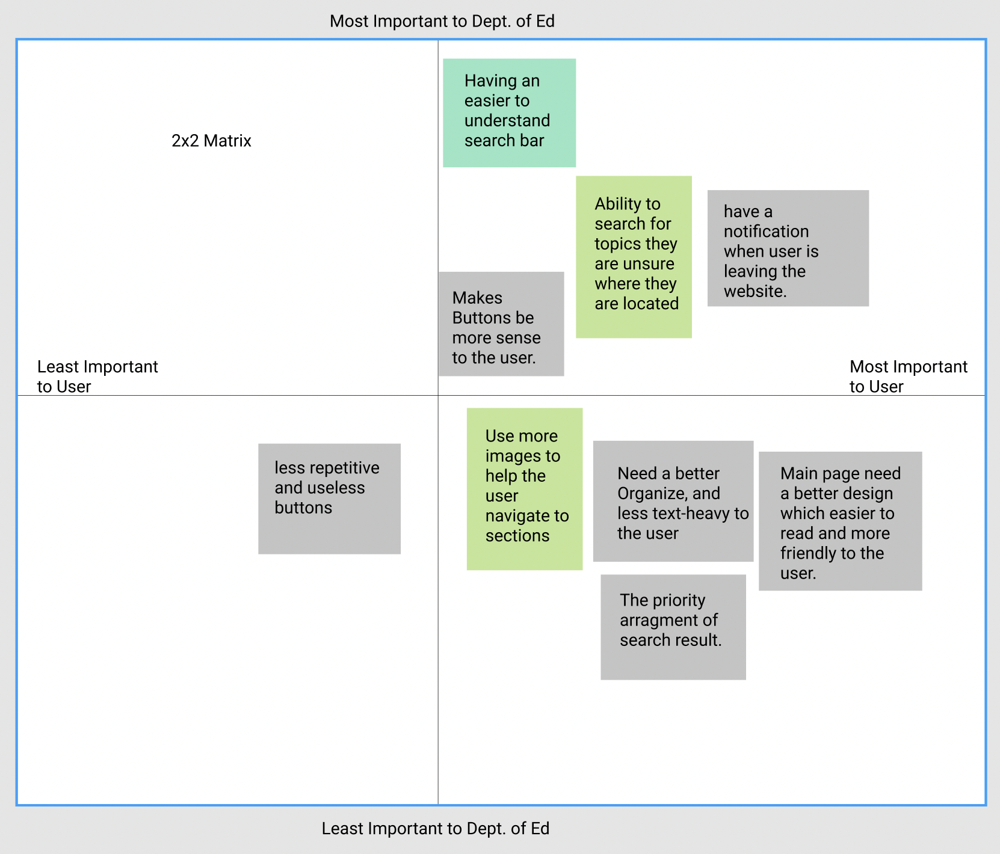
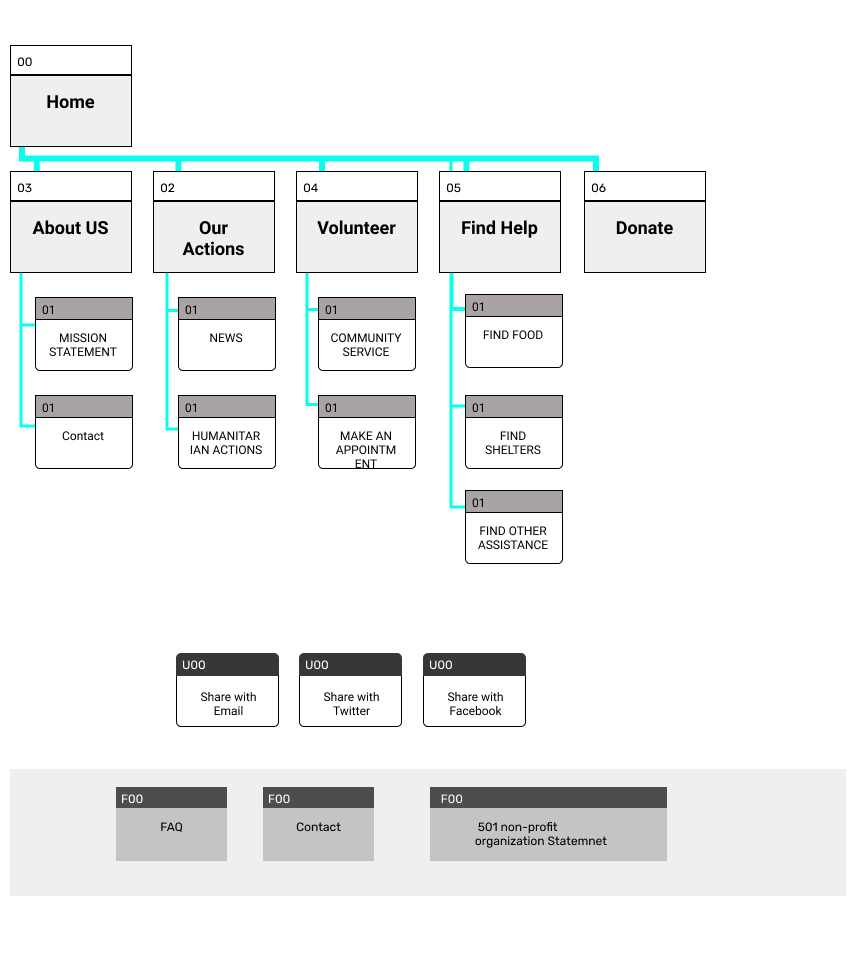
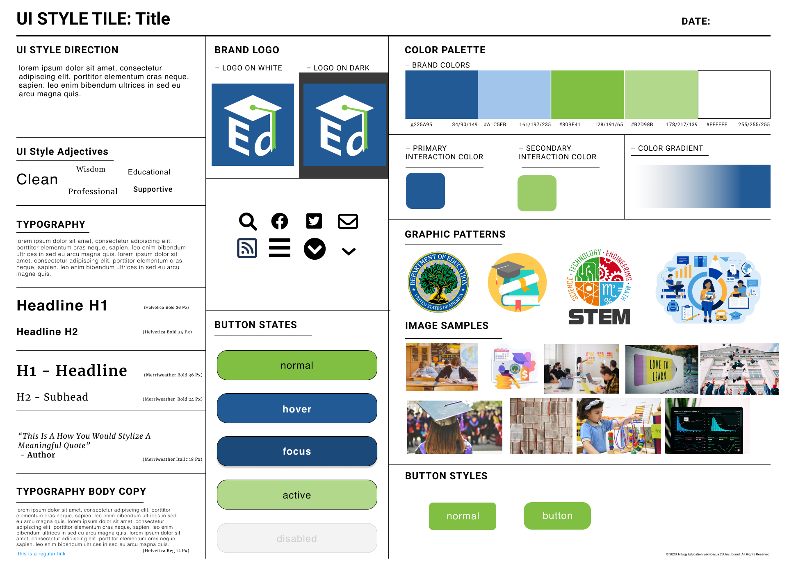

Redesign U.S Department of Education Website
Project Overview
My goal is to employ various design techniques to conduct user research and analyze UI navigation, pinpointing usability issues within the Ed.gov site. Based on the results of this research and analysis, I will redesign the site's navigation to enhance user experience. Furthermore, I will ensure the website is responsive to cater to a broader audience.
My Role
- UX Design
- User Research
- UI Design
Tool
- Miro
- Figma
- Google Suites
Project Duration
11/2021-12/2021
6 weeks
introduction
Challenges Statement
In this project, my main challenge is to address the usability issues and pain points users encounter while navigating The US Department of Education. This government-provided website offers valuable educational information and resources for students and educators, covering topics like student loans, grants, educational laws, and education data. I aim to improve the user experience by identifying and resolving these pain points to make the website more user-friendly and accessible.
Why Ed.gov?
Education resources are crucial for individuals of all ages and backgrounds. Access to quality education empowers people to learn, grow, and pursue their goals. Whether it's students seeking educational opportunities, educators looking for valuable teaching materials, or anyone interested in education-related information, having a reliable and user-friendly resource like the U.S. Department of Education's website is essential. My project aims to enhance the usability of this resource, making it more accessible and efficient for all users.
The Goals
I will use a variety of design techniques to conduct user research and analyze UI navigation, and identify usability issues on the Ed.gov site.
I will redesign the site navigation based on the results of user research and analysis.
A responsive website is a necessity.
User Research
Persona

In this project, I began by creating proto-personas, which are preliminary user personas that serve as a foundation for understanding our target audience.
User Interface Analysis

We have two primary user groups for this website: students, who use it to explore financing options for their college experience, including loans and grants, and educators, who access the site to reference education laws and gather information on school performance.
Redlining

I conducted a thorough analysis of the website's navigation, pinpointing and redlining the interface elements that caused user confusion and addressing navigation issues.
Heuristic Checklist

For a more in-depth navigation analysis, I conducted a Heuristic Checklist evaluation.
Color Testing

Ensured the color palette was user-friendly for all.
Usability Testing Plan

After research and analysis, I developed a usability testing plan for the users.
Definition & Synthesis
2 x 2 Matrix
User Testing Insights:
- Some users missed that "Student Loan" was clickable.
- Use more images for navigation.
- Users found subtitles under the Navigation bar non-clickable while images were.
- Add a notification for external website redirection.
- Improve organization and reduce context for user ease.
- Simplify the main page with less information.
- Optimize the arrangement of search results.
How might we statement?
How might we improve the site to make information easy to find and efficiently support students and educators?
- Redesign the navigation flow: Users frequently rely on the search bar to find information, highlighting the need for a more intuitive menu system with clearly understandable categories. Address issues with confusing terminology and enhance the layout by incorporating more images and space for improved readability.
- Redesign the website: Implement a responsive design to accommodate the increasing number of users accessing the site via mobile devices.
Ideation
Card Sorting

Card sorting helped me reorganize the information provided on the site. It was challenging due to the extensive amount of information on Ed.gov, which covers various aspects of education. I categorized it into five main sections: Student Loans, Grants, Laws, Data, and About Us.
Site Map
Moodboard

A sense of professional and educational website was what i am considering. Here's moondboard link.
UI Style Guide
Prototyping
Low-fidelity prototypes
UserTesting

Most of the feedback is positive.
I made several adjustments to enhance the user experience. Notably, I refined the animations in the prototype to ensure a user-friendly feel. I removed the desktop version’s ‘more news’ button to improve navigation, as users commonly overlooked it. Additionally, I fine-tuned the dropdown menu options. To streamline content, I changed 'Mission Statement' to 'News,' as users had already encountered the mission statement on the home page.
Final
Clickable High-Fidelity Prototyping
Conclusion
The Department of Education's website presented several design challenges that needed improvement. Through user testing, it became evident that users struggled to complete tasks successfully, highlighting areas that required enhancements. In my redesign, I aimed to preserve some of the positive features and colors from the original design while addressing usability issues. I maintained the original color palette of gray-blue and light green and introduced more images on the homepage to reduce the text-heavy appearance, which can overwhelm users. Since the website lacked a mobile-friendly design, I adopted a mobile-first approach, starting with the mobile version and then optimizing the desktop version. One significant improvement was the placement and visibility of the search bar, as users heavily relied on it. However, a challenge arose regarding links that directed users to external websites without notification, making it difficult for users to return to the original site. While I wished to implement a notification system allowing users to choose to 'Leave Site' and open the link in a new window, Figma's limitations prevented this. Moving forward, I plan to continue refining the redesign. There are still areas to address, such as creating a resource hub for student loans and grants to simplify searches for students.